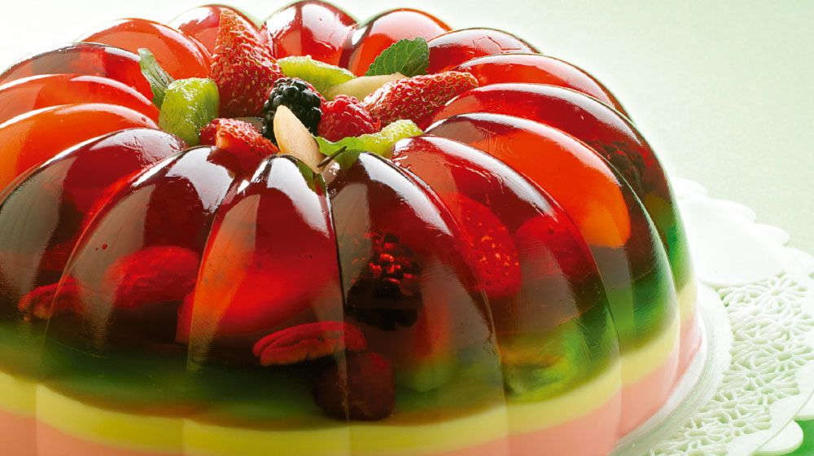

Practica 4 Receta de Gelatina Mixta con Frutas
Gelatina Mixta con Frutas

Lista de Ingredientes:
- 1 Paquete de gelatina sabor limon(de agua)
- 1 Paquete de gelatina sabor fresa(de leche)
- 1 Paquete de gelatina sabor vainilla(leche)
- 2 Litros de leche
- 1 Taza de frutas al gusto, picadas(kiwi, fresa, frambuesa, zarzamora, durazno, nuez, etc.)
Proceso:
1-Calienta 1 litro de y cuando suelte el hervor, retira de la estufa y vacia la gelatina de limon, revuelve para disolverla y espera a que este tibia.
2-Vacia la mitad en un molde de rosca con capacidad de 3 litros y refrigera hasta que comience a cuajar.
3-Saca el molde, reparte las frutas(reserva algunas para adornar) y vierte un poco de la gelatina liquida para cubrirlas; refrigera hasta que comience a cuajar y este mas firme.
4-Saca el molde otra vez y agrega el resto de la gelatina liquida; refrigera hasta que cuaje por completo.
5-Mientras, calienta 1 litro de leche y cuando este a punto de hervir, retira y vierte la gelatina de vainilla; mezcla para disolverla, deja enfriar un poco e incorporala al molde; refrigera para que cuaje.
6-De igual manera prepara la gelatina de fresa con el otro litro de leche; cuando la gelatina de vainilla haya cuajado vacia la de fresa y refrigera hasta que cuaje yeste firme.
7-Desmolda la gelatina sobre un platon y decora con las frutas frescas o bañala con leche condensada.
Nota: Las gelatinas se desmoldan con facilidad si el recipiente esta engrasado con mantequilla y se congela durante 10 minutos antes de vaciar la preparacion.
Alumn@:Gonzalez Adame Bryan JosueGrupo:4BPM
Materia: Desarrollo de Aplicaciones WebFecha:12/Febrero/2024